Alba Marina Málaga Sabogal
Audition pour le poste MCF 4064«Calcul scientifique, réalité virtuelle, réalité augmentée»
26 mai 2020
Parcours
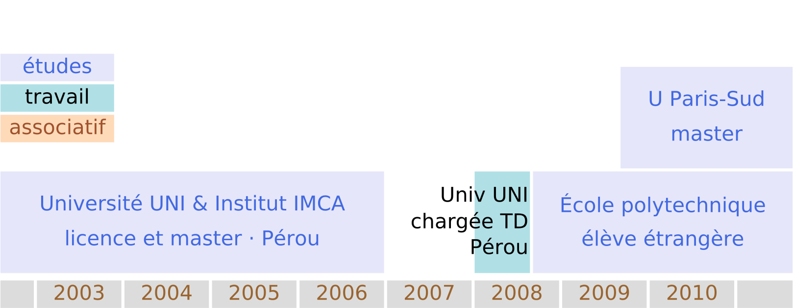
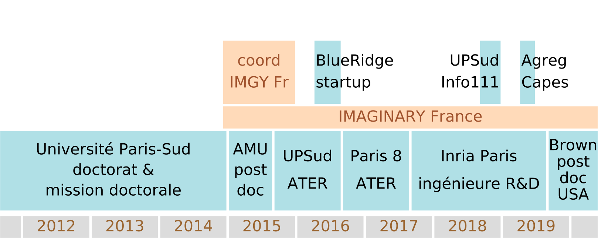
Systèmes dynamiques
- Les billards, les cylindres discrets et les escaliers
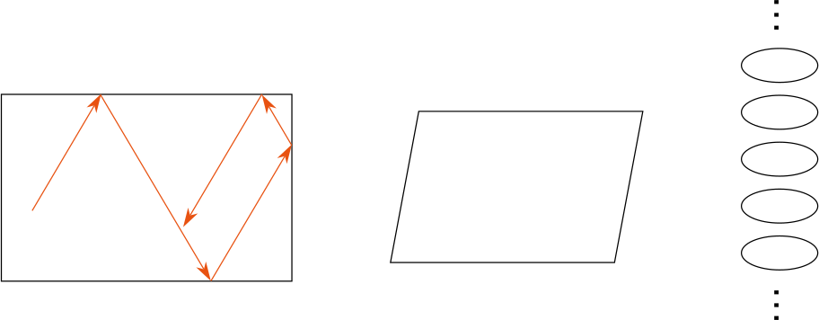
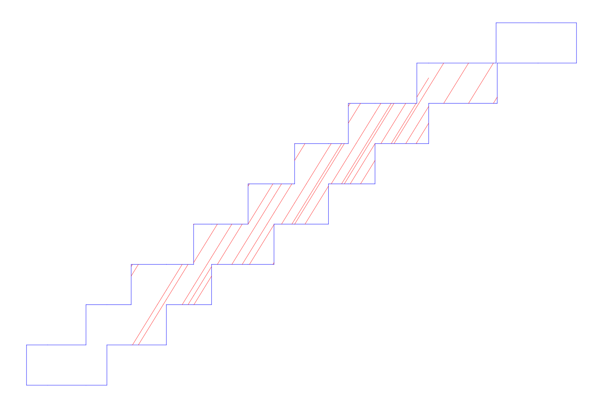
- La saga des Wind-trees
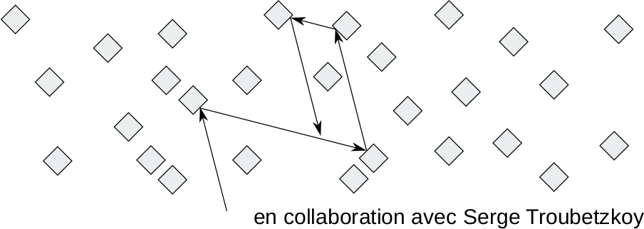
Ma thèse
J’ai soutenu en 2014 à Orsay une thèse de doctorat intitulée
Étude d’une famille de transformations
préservant la mesure de \(ℤ × 𝕋\).
sous la direction de Jean-Christophe Yoccoz (Collège de France).
Résultats sur \(ℤ × 𝕋\) \(\longleftrightarrow\) escaliers infinis.
Thm (2014) Direction fixée, escalier générique:
dynamique conservative, minimale et ergodique.
Mes travaux avec Serge Troubetzkoy
Nous poussons beaucoup plus loin les thèmes de ma thèse.
Thm (2015) Génériquement, la dynamique du wind-tree est minimale dans un large ensemble de directions.
Thm (2016) Génériquement, la dynamique du wind-tree dans presque toute direction est ergodique.
Thm (2016) La dynamique d’un billard VH est faiblement mélangeante dans un large ensemble de directions.
Thm (2017) Génériquement, la dynamique du wind-tree est d’indice ergodique infini dans un large ensemble de directions.
Thm (2019) Génériquement, la dynamique des surfaces en escalier est uniquement ergodique dans un large ensemble de directions.
Thm (2019) Génériquement, la dynamique du wind-tree est uniquement ergodique dans un large ensemble de directions.
Génération de maillages 1
Reproduction d’objets mathématiques
- Contexte
- Diffusion auprès du grand public
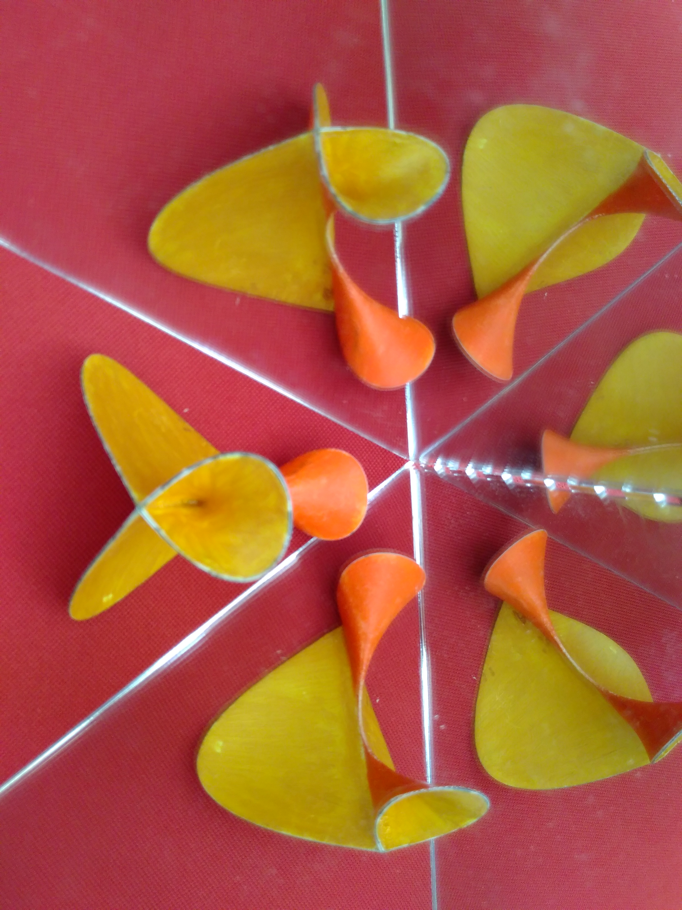
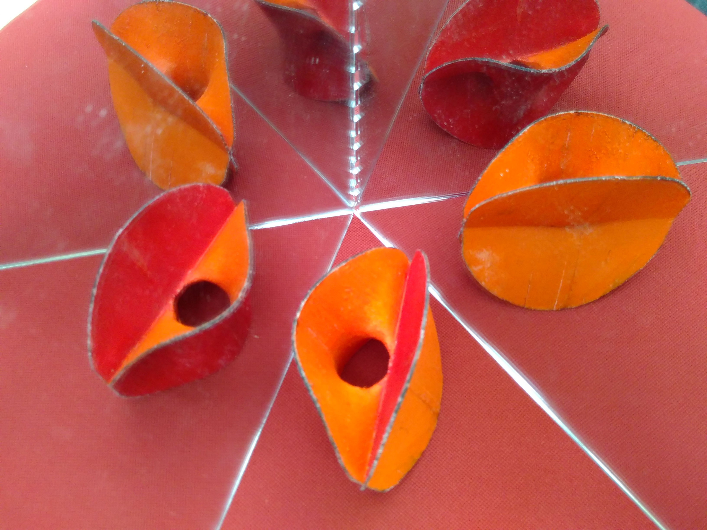
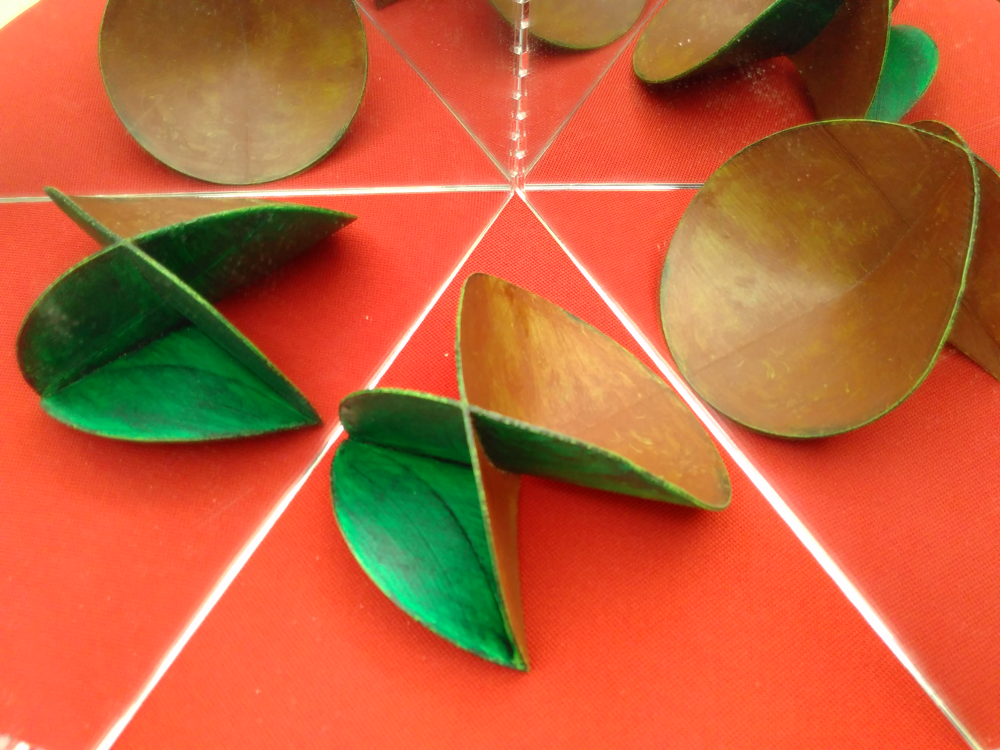

- But
- Des méthodes pour automatiser ou semi-automatiser la production de larges catégories d’objets : surfaces algébriques, surfaces minimales, objets fractals, arbres, pavages, … mais aussi reproduction d’objets historiques.
Génération de maillages 2
- Contexte
- Nombreux objets de musées numérisés en 3D.
- Problème
- Les représenter beaucoup plus grands que nature.
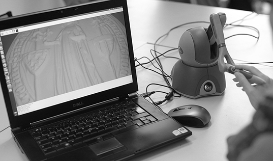
- Idée
- Raffiner le maillage en s’adaptant à l’exploration de l’utilisateur.
Génération de maillages 3
- Contexte
- On veut projeter une image ou une vidéo.
- Problème
- La surface de projection ne correspond pas
à la surface “naturelle” de la vidéo.
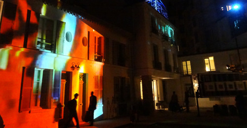
- Idée
- Déformer le maillage en s’adaptant au contexte de l’utilisateur.
Analyse de nuages de points
À la recherche des équations perdues
- Contexte
- Objets illustrant des idées mathématiques.
- Problème
- Description incomplète.
- But
- Compléter la description pour reproduire l’objet.
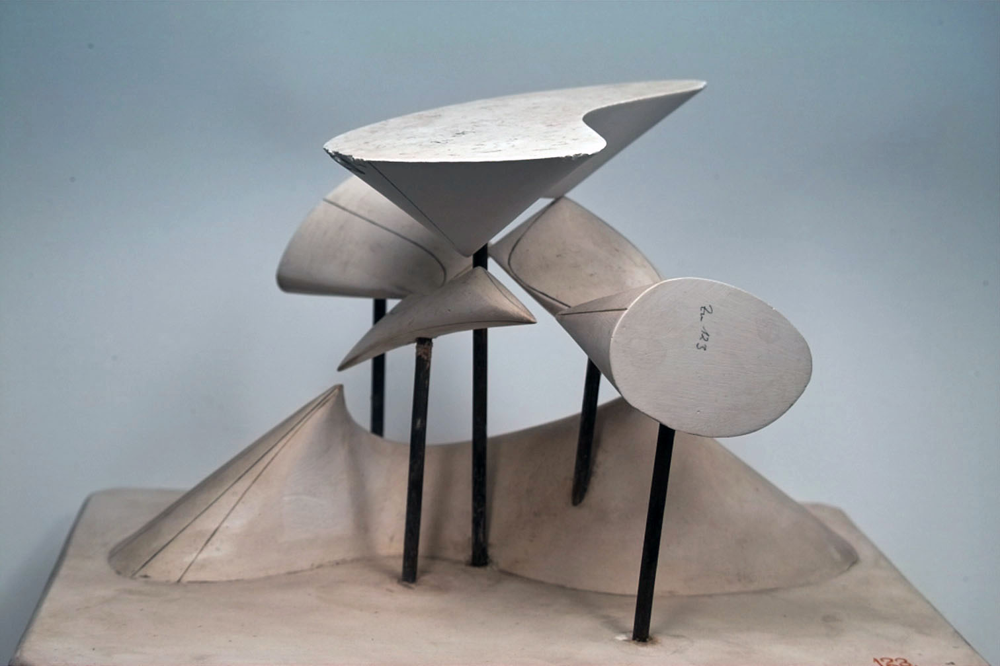
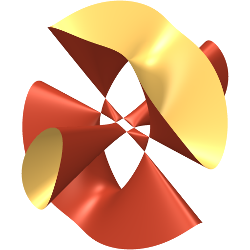
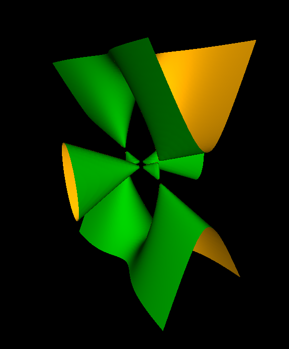
\({}\) \({}\) \({}\) ???
- Idée
- Numériser puis analyser.
Réparation de maillages
Subtilités de la fabrication additive
- Contexte
- Imprimer un objet 3D de source externe.
- Problème
- Maillage défectueux.
- But
- Réparer le fichier pour une impression de qualité.
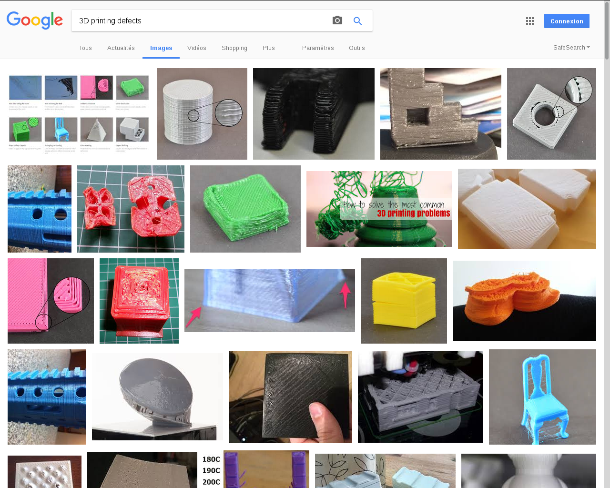
Maillages volumiques
Polyèdres à surface minimale
- Question
- Quelle configuration de \(n\) points dans l’espace minimise la surface de leur enveloppe convexe à volume fixé?
- Réponse
- Akiyama donne la réponse pour \(n=4\) à \(12\) en 2017.
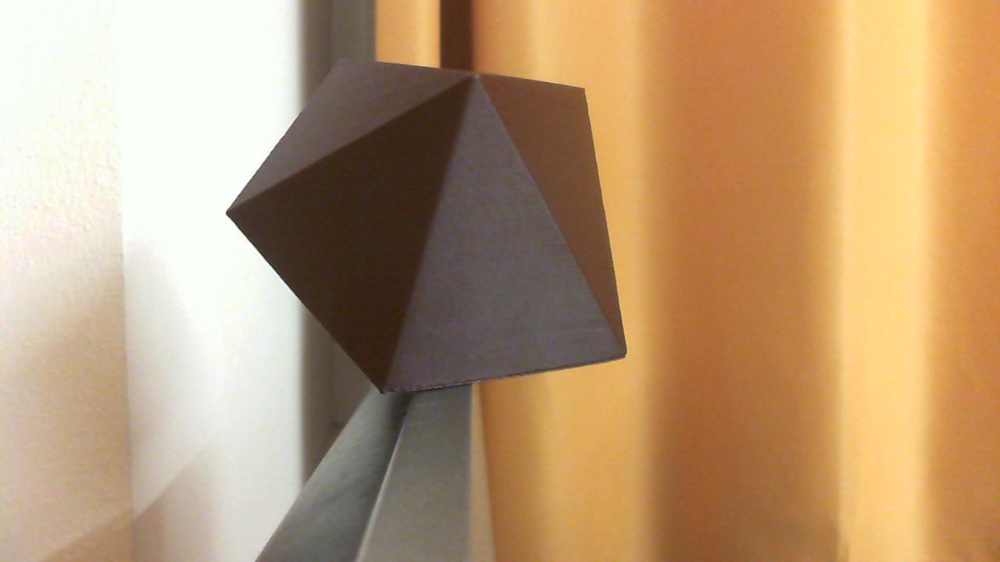
- Questions
- Que se passe-t-il pour \(n\) grand? Y a-t-il des formes de faces qui se repètent? Peut-on paver l’espace avec ce type de polyèdres?
Expérience d’enseignement
>600h dont 192h responsable de cours
| 2016-2017 |
U Paris 8 (192h) |
info |
 |
| 2015-2016 |
U Paris-Sud (192h) |
math |
 |
| 2014 |
U Paris-Sud (96h) |
math |
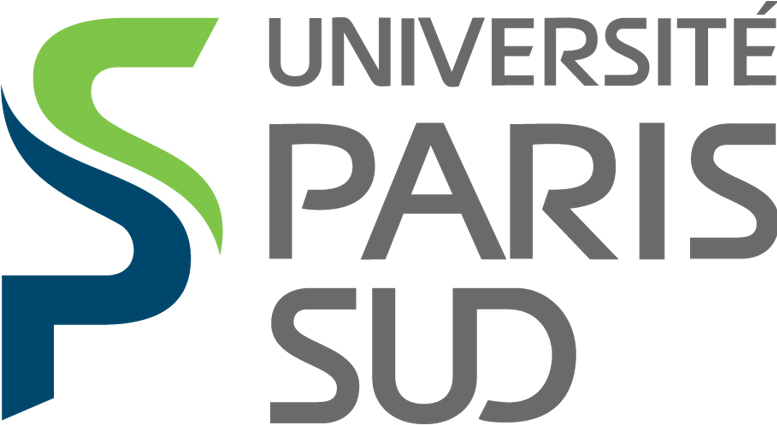 |
| 2008 |
UNI (192h) |
math |
|
Cours, cours intégrés, TD
- Équations différentielles
- Mathématiques numériques avec Python
- Calculus
- Analyse
- Calcul formel avec SageMath
- Structures algébriques
- CMS avec Wordpress
- Algèbre linéaire
- Calcul vectoriel
- Calcul intégral
- Programmation orientée objet avec Java
Facultés d’adaptation
- Programme du lycée très différent du mien
- j’ai étudié les programmes (EduScol)
- Cours de maths numériques sans ordinateurs
- Python sur smartphone (console Android)
- Étudiants d’origines diverses
- je peux enseigner en français, anglais, espagnol, polonais
- …
Adaptation à l’enseignement de l’UTT
Pour les étudiants en alternance:
- j’ai déjà encadré un étudiant géomaticien de Paris 8 en alternance à l’Établissement Français du Sang
- j’ai déjà enseigné deux cours en utilisant CoCalc, une plateforme collaborative en ligne qui se prête bien à la pédagogie inversée
UEs LO13 “Infographie 3D : théorie et applications”:
- passion de l’impression 3D
- curiosité vis-à-vis de la réalité virtuelle
Respect de l’apprenant
Proposition de projet tutoré
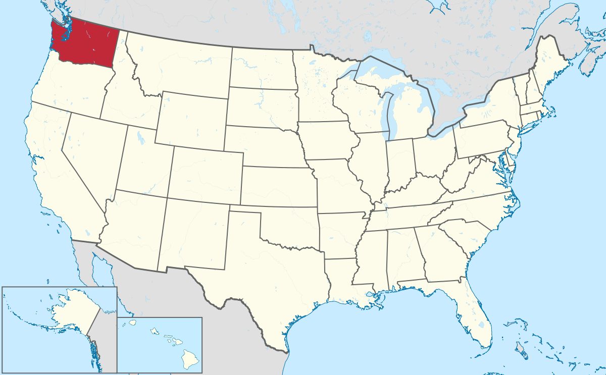 |
\(\longleftrightarrow\) |
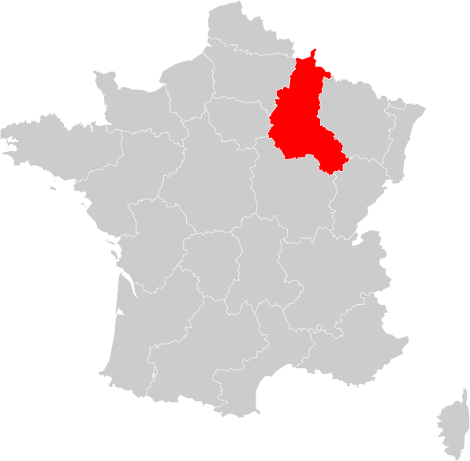 |
| U. Washington |
|
UTT |
| 3-4 students |
|
3-4 étudiants |
| J. Athreya |
|
A. Málaga |
Expérience en entreprise
Stage de 2e année à La Défense, 2012
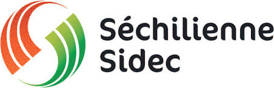
Développeuse freelance chez BlueRidge Logiciels, 2016
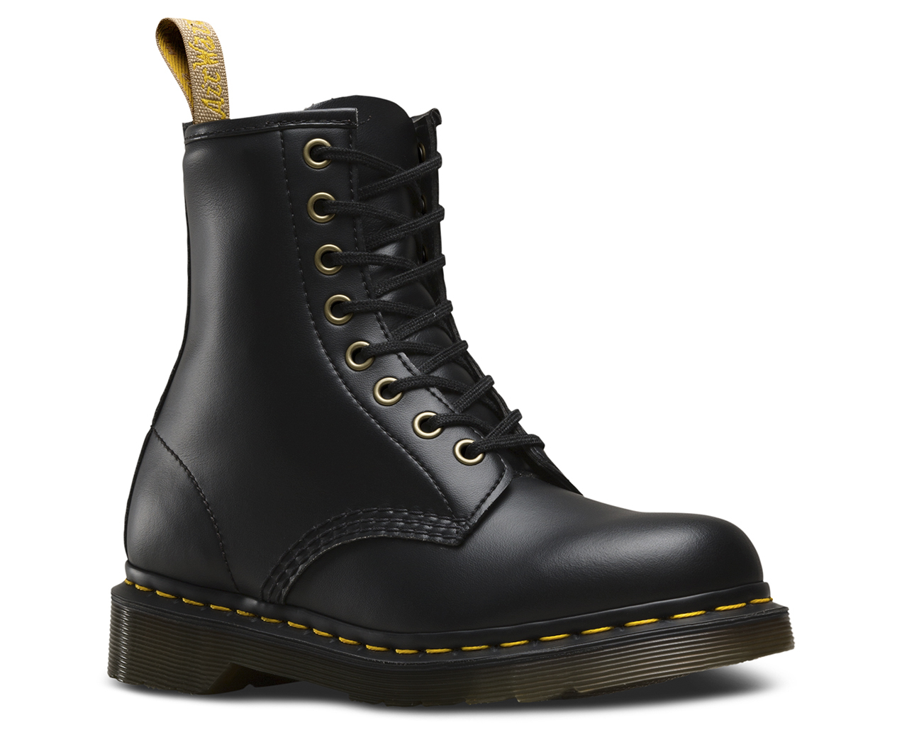
Networking/réseau
Environnements startups / université / makers
| Réso-nance |
LFO |
Ladies of code |
| Proto204 |
Small Lab |
Le Wagon |
| e-sas |
Fablab Digiscope |
Wolfox |
|
X-F4B |
… |
|
Carrefour numérique |
|
|
… |
|
Les responsabilités administratives
Faire vivre le département
- stages
- projets tutorés
- emplois du temps
- forums
- admissions
- portes ouvertes
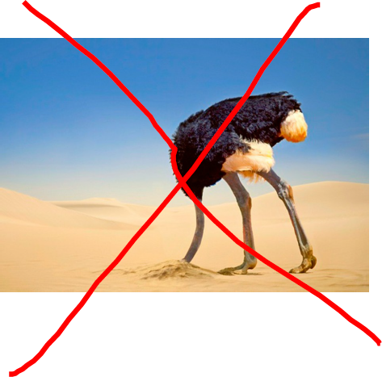
Actions de sensibilisation
- fête de la Science
- nuit des chercheurs
La médiation scientifique
- médiation autour de projets art-science – « La lumière ne s’arrête pas là » – « Premières intimités de l’être » – « Turbulent »
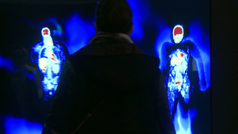
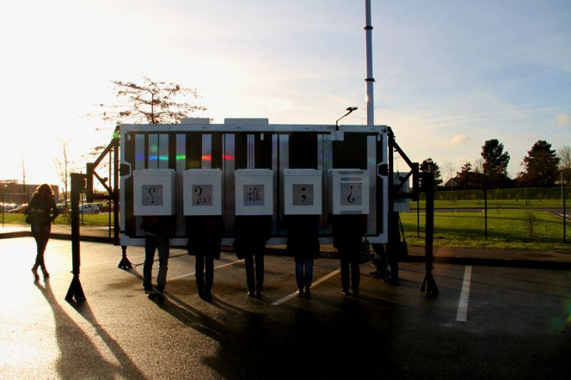
- IMAGINARY France – plus de 100 heures face au grand public – 10 événements organisés ; une rencontre autour des plateformes de partage – résautage actif : incitation à de nouvelles contributions, gestion des bénévoles
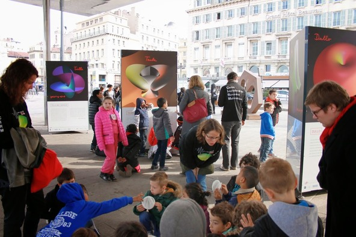
La recherche de fonds
Blocage et illumination
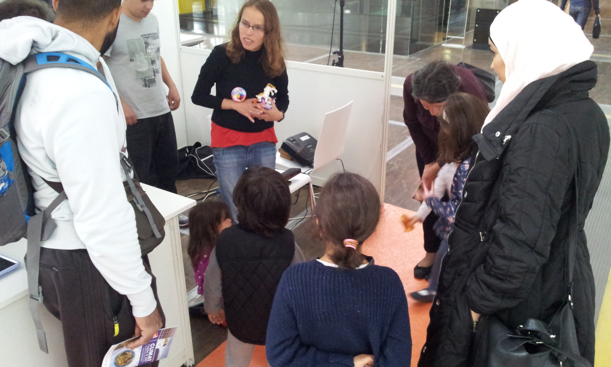
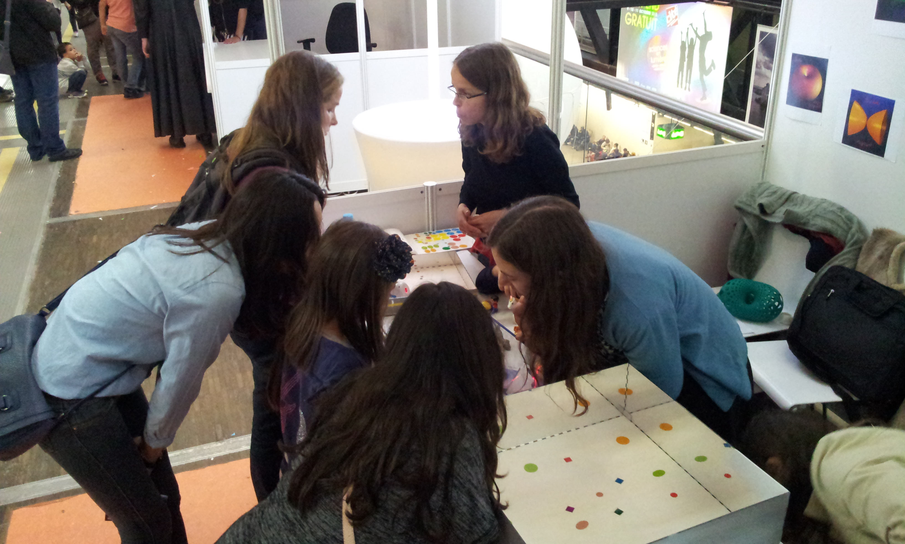
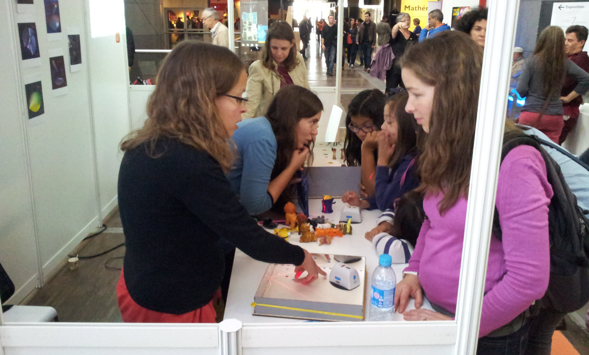
- représentation interactive d’un théorème récent sur les billards
- collaboration avec Samuel Lelièvre
- financement:
La Diagonale Paris-Saclay, Fondation Blaise Pascal
Questions ?
| parcours mixte math-info |
vrai souci de l’accessibilité |
fan de logiciels libres |
|
|
|
| intérêt en médiation scientifique |
grand respect pour les étudiants |
continuité et ouverture dans la recherche |
|
|
|
| facilités de contact |
fibre «maker» |
compétences techniques |
J’ai à cœur de m’intégrer dans la recherche chez Gamma3
et dans l’enseignement à l’UTT.
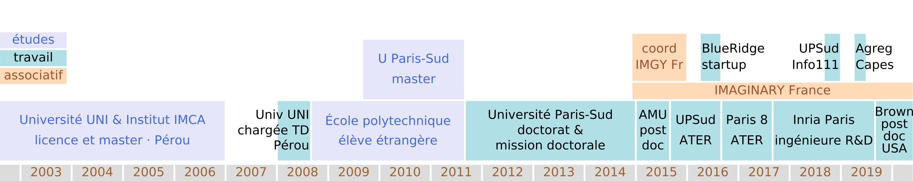